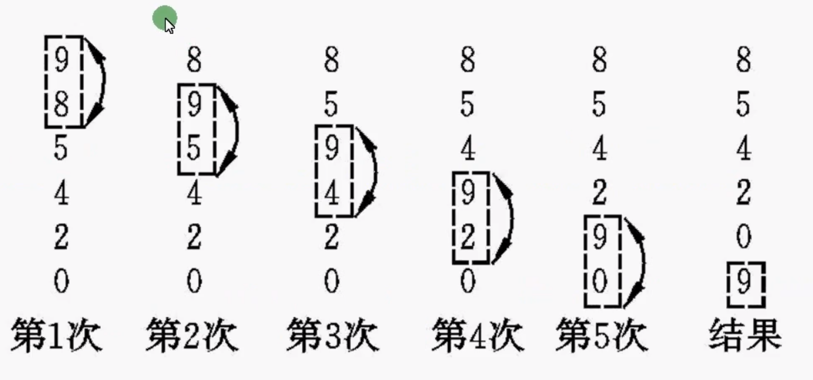
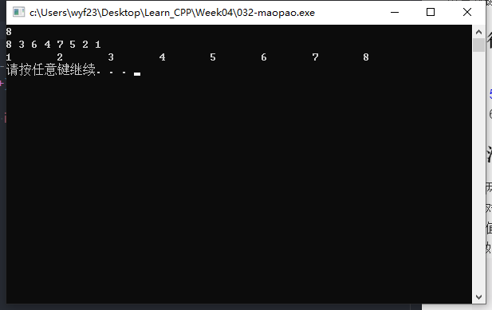
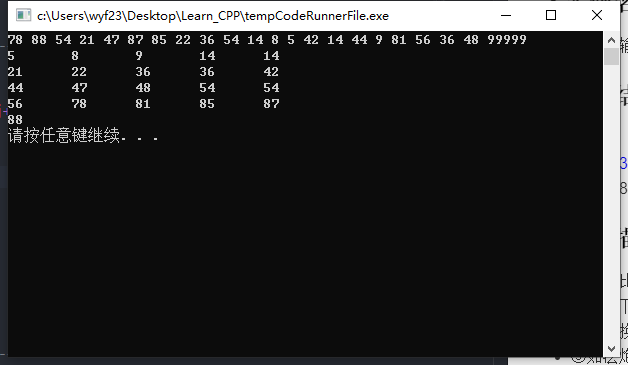

简介：冒泡排序。
【实例名称】
冒泡排序
用户从键盘输入N，然后输入N个实数，使用冒泡排序方法对这N个元素排序，输出排序后的数据。
【运行结果】
8
9 8 7 6 5 4 3 2
2 3 4 5 6 7 8 9
【冒泡描述】
- ①两辆比较相邻元素A(I)和A(I+1)(I=1,2,…N-1)，如果A(I)>A(I+1)，则交换A(I)和A(I+1)的位置；
- ②对剩下的N-1个元素，再两两进行比较，按相同的规则交换它们的位置，经过N-2次比较，将最大值交换到A(N-1)的位置；
- ③如法炮制，经过N-1趟的“冒泡处理”，每趟进行N-i次的比较，全部数列有序；

【算法描述】
设有N个元素，用数组a[i]表示，i=0，…，N
- ①输入N；
- ②输入a[i]，i=0，…，N-1；
- ③对i=0，…，n-2
- ④ 对j=0，…，n-2-i
- ⑤ 若a[j]>a[j+1]，则交换它们的值。
- ⑥对i=0，…，N-1，输出a[i]
【示例代码】
1
2
3
4
5
6
7
8
9
10
11
12
13
14
15
16
17
18
19
20
21
22
23
24
25
26
27
28
29
30
31
32
33
34
35
36
| #include <iostream>
using namespace std;
int main()
{
double a[100];
int N;
int i = 0, j = 0;
cin >> N;
for (i = 0; i < N; i++)
{
cin >> a[i];
}
for (i = 0; i < N - 1; i++)
{
for (j = 0; j < N - 1 - i; j++)
{
if (a[j] > a[j + 1])
{
int tmp;
tmp = a[j];
a[j] = a[j + 1];
a[j + 1] = tmp;
}
}
}
for (i = 0; i < N; i++)
{
cout << a[i] << '\t';
}
cout << endl;
system("pause");
return 0;
}
|
【执行结果】

【程序分析】
- ①注意程序中带短划线的三段注释，基本体现了本程序的三块内容，输入、处理和输出。
- ②排序的程序主要有2个循环。外层循环控制N-1趟，内层循环控制一趟的若干次比较，第一趟需要N-1次比较，第二次需要N-2次比较，第N-1次需要N-(N-1)=1次比较。
- ③元素存放在数组中，数组的大小在定义时要求是常量表达式。不能先输入N，再定义数组double A[N]，这是不正确的。
【思路扩展】
- ①修改程序，用户不再先输入元素个数，而是在输入数据时以9999为结束符，如输入：
20 13 01 30 23 52 15 34 99999
结果为：
1 13 15 20 23 30 34 52
- ②当元素较多时，在一行中输入所有元素是不显示的。虽然系统会自动换行，但不整齐，请修改程序，使每行输出5个元素。
【示例代码】
1
2
3
4
5
6
7
8
9
10
11
12
13
14
15
16
17
18
19
20
21
22
23
24
25
26
27
28
29
30
31
32
33
34
35
36
37
38
39
| #include <iostream>
using namespace std;
int main()
{
double a[100];
int i = 0, j = 0, N = 0;
while (a[N - 1] != 99999)
{
cin >> a[N];
N++;
}
for (i = 0; i < N - 2; i++)
{
for (j = 0; j < N - 2 - i; j++)
{
if (a[j] > a[j + 1])
{
int tmp;
tmp = a[j];
a[j] = a[j + 1];
a[j + 1] = tmp;
}
}
}
for (i = 0; i < N - 1; i++)
{
cout << a[i] << '\t';
if ((i+1) % 5 == 0)
{
cout << endl;
}
}
cout << endl;
system("pause");
return 0;
}
|
【执行结果】
